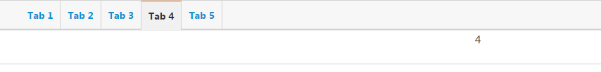

1. 本地存储
1.1.1. localStorage
localStorage允许你操作本地存储对象。localStorage与sessionStorage相似。唯一不同的是，localStorage中的数据没有时间限制，而对于sessionStorage，当浏览器会话结束(即浏览器关闭)时，sessionStorage中数据将被清除。
语法
myStorage = localStorage;
// 或
myStorage = window.localStorage;
//localStorage是window的属性
值
一个Storage对象。
即 window.localStorage指向（是）一个 Storage对象，可以调用Storage的API接口方法进行数据操作。
示例
localStorage.setItem('myCat', 'Tom');
该脚本操作当前域的本地Storage对象，并通过Storage的setItem()方法添加了一个数据项。
1.1.2. sessionStorage
sessionStorage与localStorage基本相同，不同之处在于localStorage的数据不会过期，而sessionStorage中的数据在会话结束后被清除。页面会话在浏览器打开期间一直保持，并且重新加载或恢复页面仍会保持原来的页面会话。在新标签或窗口打开一个页面会初始化一个新的会话。
1.1.3. Storage
Storage接口提供了对会话存储(session storage)和本地存储(local storage)的操作，可以对存储数据项进行增、删、改操作。Storage与对象一样，以键值对保存数据。key可以试字符串或整数，但value总是字符串。Storage可以像对象一样操作数据或者使用自身的接口方法。
Storage提供的属性和方法
属性
Storage.length(只读) 返回数据项的个数。
方法
storage.key(key)
返回指定下标的key键值，参数key表示数据项在Storage中存储位置，整数(0,1,2...).storage.getItem(keyName)
获取指定键值名称keyName的value值。storage.setItem(keyName, keyValue)新增属性或更新已存在的属性。storage.removeItem(keyName)删除指定的属性。Storage.clear()清空storage
检测浏览器是否支持Storage
function storageAvailable(type) {
try {
var storage = window[type],
x = '__storage_test__';
storage.setItem(x, x);
storage.removeItem(x);
return true;
}
catch(e) {
return false;
}
}
这个方法检测浏览器是否支持localStorage特性且是否可用。某些浏览器支持localStorage特性，但提供了不启用localStorage的设置。所以存在浏览器支持localStorage但不能在脚本中使用的情况。
使用：
if (storageAvailable('localStorage')) {
// Yippee! We can use localStorage awesomeness
}
else {
// Too bad, no localStorage for us
}
向storage设置值
function populateStorage() {
localStorage.setItem('bgcolor', document.getElementById('bgcolor').value);
localStorage.setItem('font', document.getElementById('font').value);
localStorage.setItem('image', document.getElementById('image').value);
setStyles();
}
从storage获取值
var htmlElem = document.querySelector('html');
var pElem = document.querySelector('p');
var imgElem = document.querySelector('img');
var bgcolorForm = document.getElementById('bgcolor');
var fontForm = document.getElementById('font');
var imageForm = document.getElementById('image');
function setStyles() {
//从storage中获取值
var currentColor = localStorage.getItem('bgcolor');
var currentFont = localStorage.getItem('font');
var currentImage = localStorage.getItem('image');
//在页面中使用
document.getElementById('bgcolor').value = currentColor;
document.getElementById('font').value = currentFont;
document.getElementById('image').value = currentImage;
htmlElem.style.backgroundColor = '#' + currentColor;
pElem.style.fontFamily = currentFont;
imgElem.setAttribute('src', currentImage);
}
通过对象方式操作storage值
localStorage.setItem('colorSetting', '#a4509b');
//对象方式
localStorage.colorSetting = '#a4509b';
localStorage['colorSetting'] = '#a4509b';
删除对象记录
localStorage.removeItem('bgcolor');
// or
localStorage.clear();
storage事件
StorageEvent事件：一旦Storage对象发生变化时，就会触发StorageEvent事件。但这个事件不会在当前发生变化的页面起作用，只作用于同域下的其他页面，并同步发生变化的Storage对象。不同域操作不同的Storage(Storage不能跨域共享).
存储事件的属性和方法
属性
| 属性 | 类型 | 描述(只读) |
|---|---|---|
| key | DOMString | 发生变化的key |
| newValue | DOMString | 变化后的新值 |
| oldValue | DOMString | 变化前的值 |
| storageArea | nsIDOMStorage | 被影响的Storage对象 |
| url | DOMString | key发生变化的文档的URL |
方法
initStorageEvent()
示例
打开页面显示上次的tab状态
<!DOCTYPE html>
<html>
<head lang="en">
<meta charset="UTF-8">
<title></title>
<link rel="stylesheet" href="css/styles/base.css"/>
<style>
#nav {
height: 42px;
border: 1px solid #d3d3d3;
background: #f7f7f7;
-moz-border-radius: 2px;
-webkit-border-radius: 2px;
border-radius: 2px;
-moz-box-shadow: 1px 1px 2px rgba(0, 0, 0, .2);
-webkit-box-shadow: 1px 1px 2px rgba(0, 0, 0, .2);
box-shadow: 1px 1px 2px rgba(0, 0, 0, .2);
}
#nav ul{
list-style: none;
}
#nav li {
float: left;
height: 42px;
line-height: 42px;
border-right: 1px solid #d3d3d3;
font-size: 14px;
font-weight: bold;
padding: 0 10px;
}
#nav li.cur {
background: #f1f1f1;
border-top: 1px solid #f60;
box-shadow: none;
}
#nav li a {
text-decoration: none;
display: block;
}
#nav li.cur a {
color: #333;
}
#nav li a:hover {
color: #f30;
}
#page {
border: 1px solid #d3d3d3;
height: 50px;
text-align: center;
}
.list {
display: none;
}
</style>
</head>
<body>
<div id="nav">
<ul>
<li><a href="#">Tab 1</a></li>
<li><a href="#">Tab 2</a></li>
<li><a href="#">Tab 3</a></li>
<li><a href="#">Tab 4</a></li>
<li><a href="#">Tab 5</a></li>
</ul>
</div>
<div id="page">
<div class="list">1</div>
<div class="list">2</div>
<div class="list">3</div>
<div class="list">4</div>
<div class="list">5</div>
</div>
</body>
<script src="libs/jquery/dist/jquery.min.js"></script>
<script>
$(function(){
init();
});
/**
* 是否支持Storage
*
*/
function storageAvailable(type) {
try {
var storage = window[type],
x = '__storage_test__';
storage.setItem(x, x);
storage.removeItem(x);
return true;
}
catch(e) {
return false;
}
}
/**
* 显示tab和list
* @param obj
* @param index
*/
function showTabList(obj,index){
index = index? index : 0;
//tab高亮
if(obj){
$(obj).addClass("cur").siblings("li").removeClass("cur");
}else{
$("#nav").find("li").eq(index).addClass("cur").siblings("li").removeClass("cur");
}
//显示对应的list
$(".list").eq(index).show().siblings().hide();
}
/**
* 初始化
*/
function init (){
if (storageAvailable('localStorage')) {
//上次点击的tab下标
var preTab = localStorage.getItem("tabbed");
//第一次打开，初始化第一个tab，index为0
if(!preTab){
showTabList();
}
//遍历所有tab
$("#nav").find("li").each(function(index){
var $li = $(this);
//非第一次，则初始化显示上次点击的tab
if(index == preTab){
showTabList(null,index);
}
//li绑定click事件
$li.click(function(){
showTabList(this,index);
//设置tabbed值
localStorage.setItem("tabbed",index);
});
})
}
else {
// Too bad, no localStorage for us
}
}
</script>
</html>
效果
